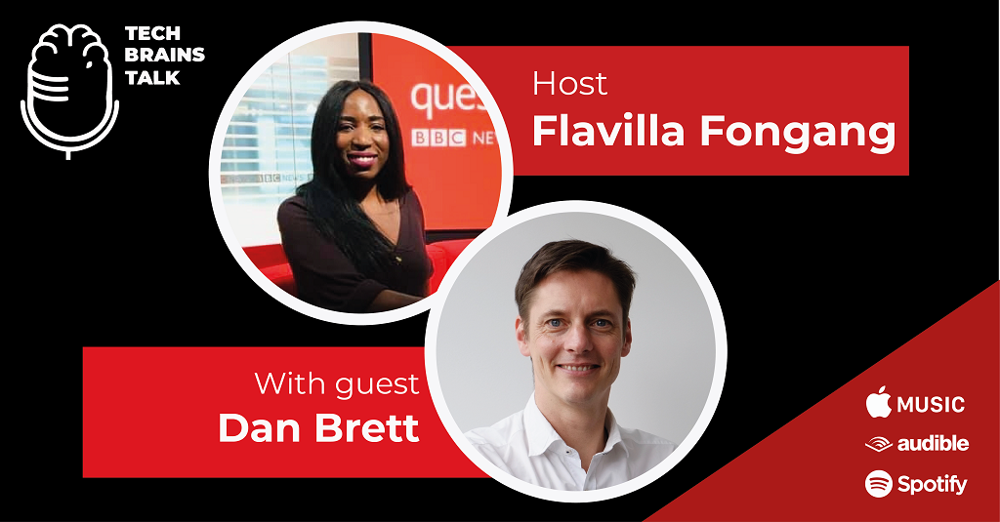

Tech Brains Talk is a fun, relaxed, educative and honest podcast. It is a conversation on the strategy of becoming a remarkable individual, creating or being part of iconic tech brands. This podcast is hosted by Flavilla Fongang, founder and director of 3 Colours Rule.
